Doce
Croissant com avelã
Croissant folhado coberto com creme de avelã e morango fresco.
Espressos, doces e um lugar tranquilo para ficar mais um pouco.
Manhãs sem pressa, cantos aconchegantes e um café para ficar mais um pouco.
Croissant folhado coberto com creme de avelã e morango fresco.
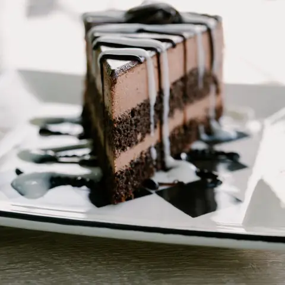
Bolos inteiros ou em fatia, com cobertura feita na casa.
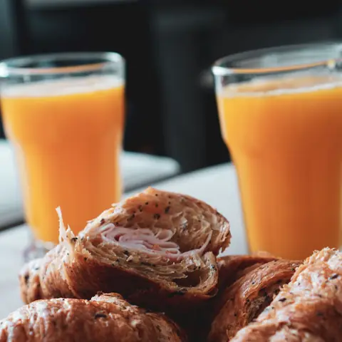
Recheio salgado, servido com suco natural.
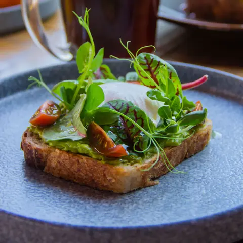
Pão tostado com folhas, para acompanhar o café.
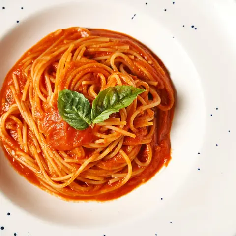
Massa com molho de tomate e manjericão.
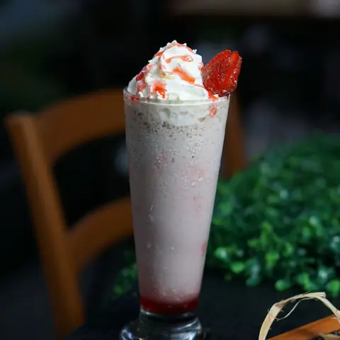
Frutas vermelhas, chantilly e calda.
Itens de exemplo. Fotos, nomes e preços reais entram aqui.
Feitos na casa, para acompanhar o café.
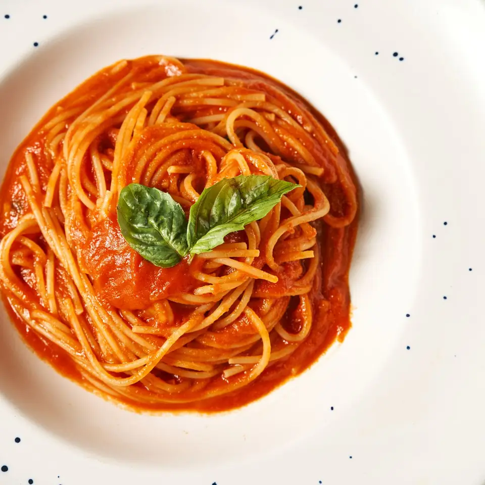
Massa com molho de tomate e manjericão.
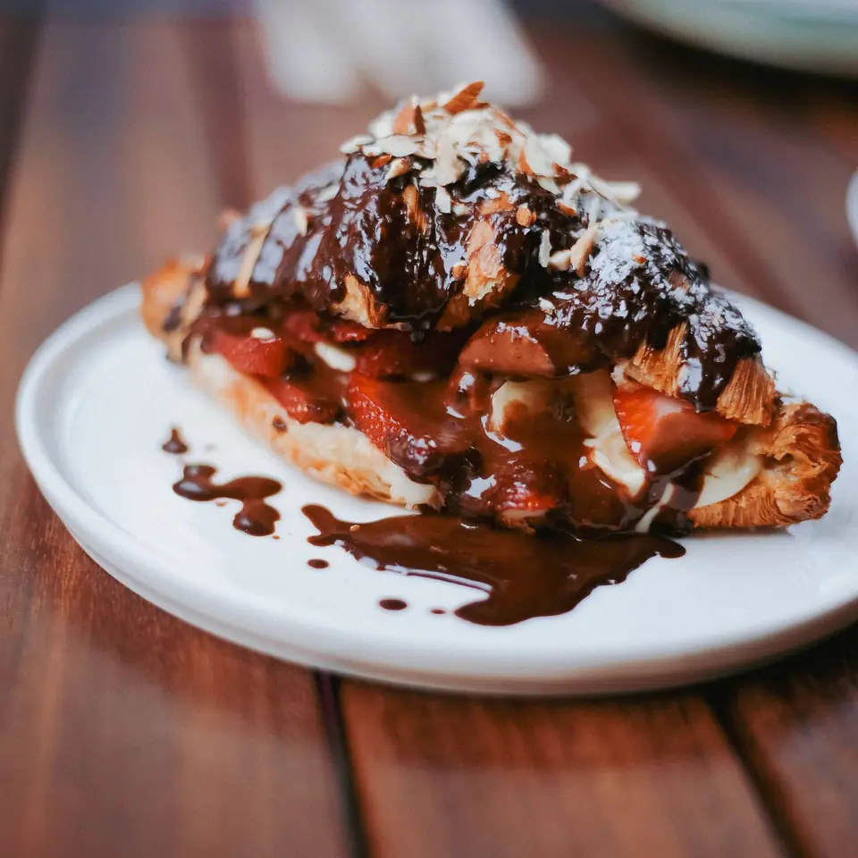
Croissant folhado coberto com creme de avelã e morango fresco.
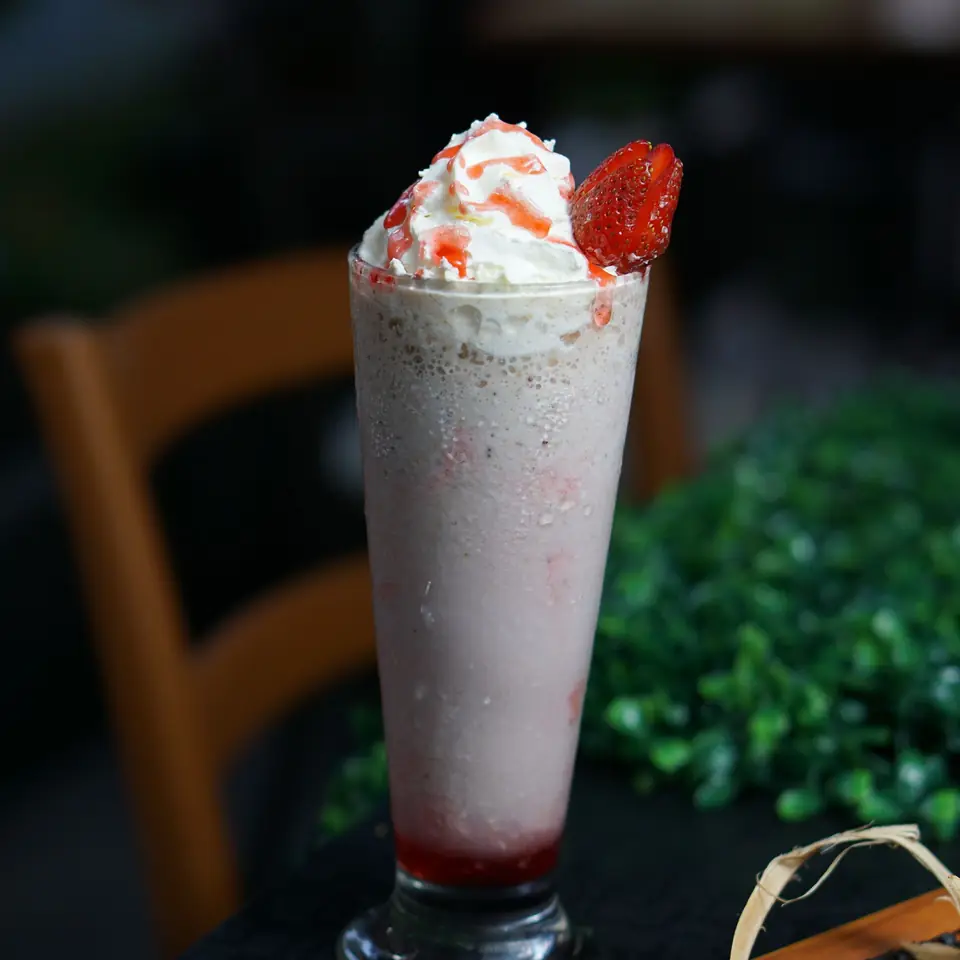
Frutas vermelhas, chantilly e calda.
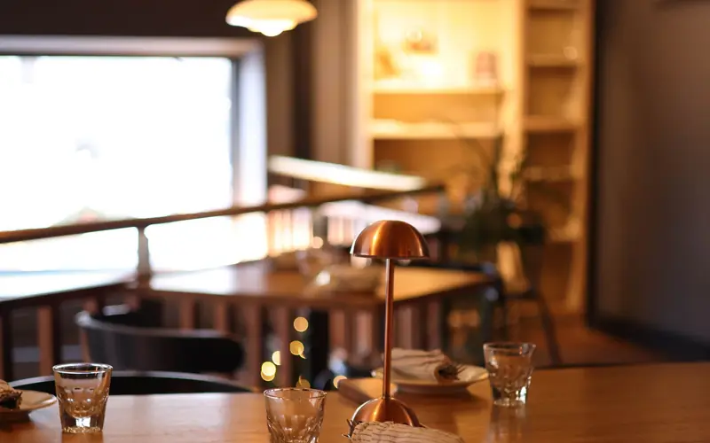
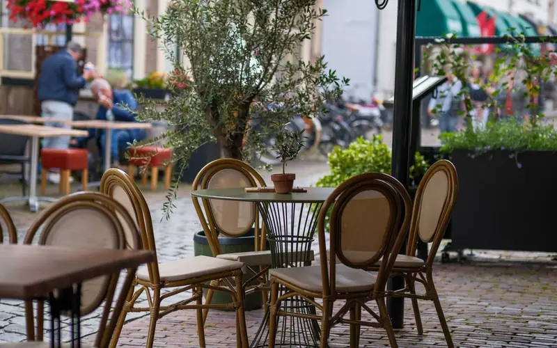
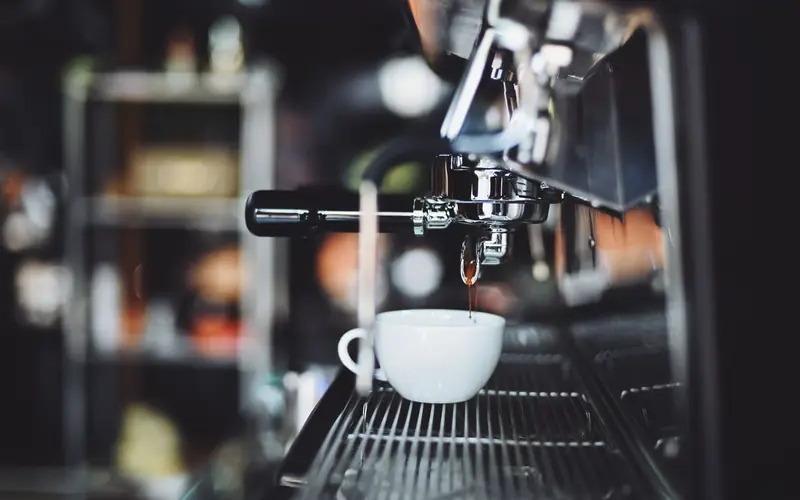
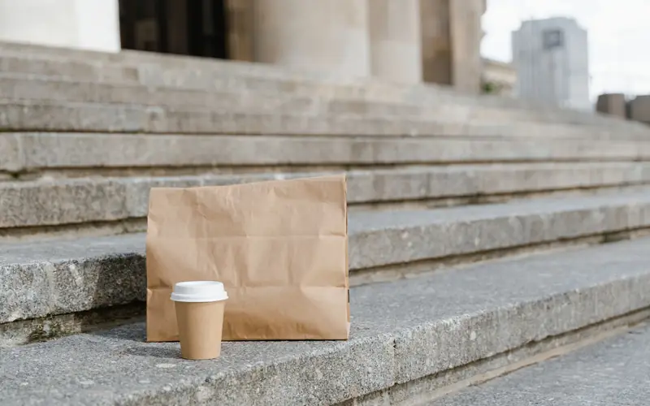
Exemplo de evento recorrente. Datas e detalhes entram aqui.
Espaço para divulgar a programação do mês.
| Segunda a sexta | 07:00 – 19:00 |
| Sábado | 08:00 – 18:00 |
| Domingo | 08:00 – 14:00 |
Endereço, telefone e redes sociais de exemplo.